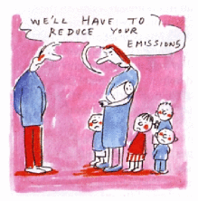
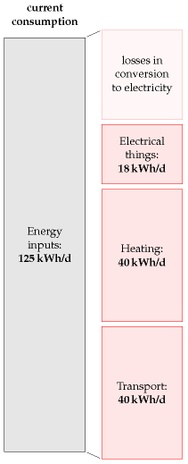
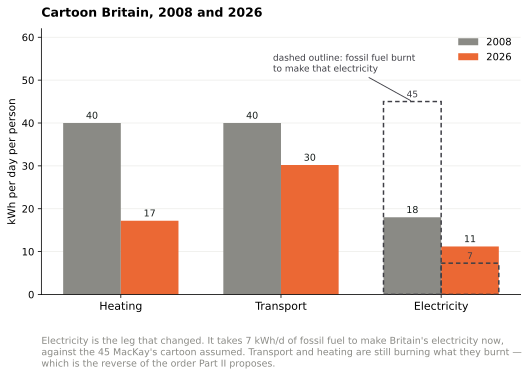

19 Every BIG helps
(Figure omitted from this edition: third-party rights.)
Figure 19.1. Reproduced by kind permission of PRIVATE EYE / Robert Thompson www.private-eye.co.uk.
We’ve established that the UK’s present lifestyle can’t be sustained on the UK’s own renewables (except with the industrialization of country-sized areas of land and sea). So, what are our options, if we wish to get off fossil fuels and live sustainably? We can balance the energy budget either by reducing demand, or by increasing supply, or, of course, by doing both.
Have no illusions. To achieve our goal of getting off fossil fuels, these reductions in demand and increases in supply must be big. Don’t be distracted by the myth that “every little helps.” If everyone does a little, we’ll achieve only a little. We must do a lot. What’s required are big changes in demand and in supply.
“But surely, if 60 million people all do a little, it’ll add up to a lot?” No. This “if-everyone” multiplying machine is just a way of making something small sound big. The “if-everyone” multiplying machine churns out inspirational statements of the form “if everyone did X, then it would provide enough energy/water/gas to do Y,” where Y sounds impressive. Is it surprising that Y sounds big? Of course not. We got Y by multiplying X by the number of people involved – 60 million or so! Here’s an example from the Conservative Party’s otherwise straight-talking Blueprint for a Green Economy:
“The mobile phone charger averages around … 1W consumption, but if every one of the country’s 25 million mobile phones chargers were left plugged in and switched on they would consume enough electricity (219GWh) to power 66 000 homes for one year.”
66 000? Wow, what a lot of homes! Switch off the chargers! 66 000 sounds a lot, but the sensible thing to compare it with is the total number of homes that we’re imagining would participate in this feat of conservation, namely 25 million homes. 66 000 is just one quarter of one percent of 25 million. So while the statement quoted above is true, I think a calmer way to put it is:
If you leave your mobile phone charger plugged in, it uses one quarter of one percent of your home’s electricity.
And if everyone does it?
If everyone leaves their mobile phone charger plugged in, those chargers will use one quarter of one percent of their homes’ electricity.
While the footprint of each individual cannot be reduced to zero, the absence of an individual does do so.
Chris Rapley, former Director of the British Antarctic Survey
We need fewer people, not greener ones.
Daily Telegraph, 24 July 2007
Democracy cannot survive overpopulation. Human dignity cannot survive overpopulation.
Isaac Asimov

Figure 19.2. Population growth and emissions… Cartoon courtesy of Colin Wheeler.
The “if-everyone” multiplying machine is a bad thing because it deflects people’s attention towards 25million minnows instead of 25million sharks. The mantra “Little changes can make a big difference” is bunkum, when applied to climate change and power. It may be true that “many people doing a little adds up to a lot,” if all those “littles” are somehow focused into a single “lot” – for example, if one million people donate £10 to one accident victim, then the victim receives £10 million. That’s a lot. But power is a very different thing. We all use power. So to achieve a “big difference” in total power consumption, you need almost everyone to make a “big” difference to their own power consumption.
So, what’s required are big changes in demand and in supply. Demand for power could be reduced in three ways:
- by reducing our population (figure 19.2);
- by changing our lifestyle;
- by keeping our lifestyle, but reducing its energy intensity through “efficiency” and “technology.”
Supply could be increased in three ways:
- We could get off fossil fuels by investing in “clean coal” technology. Oops! Coal is a fossil fuel. Well, never mind – let’s take a look at this idea. If we used coal “sustainably” (a notion we’ll define in a moment), how much power could it offer? If we don’t care about sustainability and just want “security of supply,” could coal offer that?
- We could invest in nuclear fission. Is current nuclear technology “sustainable”? Is it at least a stop-gap that might last for 100 years?
- We could buy, beg, or steal renewable energy from other countries – bearing in mind that most countries will be in the same boat as Britain and will have no renewable energy to spare; and also bearing in mind that sourcing renewable energy from another country doesn’t magically shrink the renewable power facilities required. If we import renewable energy from other countries in order to avoid building renewable facilities the size of Wales in our country, someone will have to build facilities roughly the size of Wales in those other countries.
The next seven chapters discuss first how to reduce demand substantially, and second how to increase supply to meet that reduced, but still “huge,” demand. In these chapters, I won’t mention all the good ideas. I’ll discuss just the big ideas.
Cartoon Britain
To simplify and streamline our discussion of demand reduction, I propose to work with a cartoon of British energy consumption, omitting lots of details in order to focus on the big picture. My cartoon-Britain consumes energy in just three forms: heating, transport, and electricity. The heating consumption of cartoon-Britain is 40 kWh per day per person (currently all supplied by fossil fuels); the transport consumption is also 40 kWh per day per person (currently all supplied by fossil fuels); and the electricity consumption is 18 kWh(e) per day per person; the electricity is currently almost all generated from fossil fuels; the conversion of fossil-fuel energy to electricity is 40% efficient, so supplying 18 kWh(e) of electricity in today’s cartoon-Britain requires a fossil-fuel input of 45 kWh per day per person. This simplification ignores some fairly sizeable details, such as agriculture and industry, and the embodied energy of imported goods! But I’d like to be able to have a quick conversation about the main things we need to do to get off fossil fuels. Heating, transport, and electricity account for more than half of our energy consumption, so if we can come up with a plan that delivers heating, transport, and electricity sustainably, then we have made a good step on the way to a more detailed plan that adds up.

Figure 19.3. Current consumption in “cartoon-Britain 2008.”
Having adopted this cartoon of Britain, our discussions of demand reduction will have just three bits. First, how can we reduce transport’s energy-demand and eliminate all fossil fuel use for transport? This is the topic of Chapter 20. Second, how can we reduce heating’s energy-demand and eliminate all fossil fuel use for heating? This is the topic of Chapter 21. Third, what about electricity? Chapter 22 discusses efficiency in electricity consumption.
Three supply options – clean coal, nuclear, and other people’s renewables – are then discussed in Chapters 23, 24, and 25. Finally, Chapter 26 discusses how to cope with fluctuations in demand and fluctuations in renewable power production.
Having laid out the demand-reducing and supply-increasing options, Chapters 27 and 28 discuss various ways to put these options together to make plans that add up, in order to supply cartoon-Britain’s transport, heating, and electricity.
I could spend many pages discussing “50 things you can do to make a difference,” but I think this cartoon approach, chasing the three biggest fish, should lead to more effective policies.
But what about “stuff”? According to Part I, the embodied energy in imported stuff might be the biggest fish of all! Yes, perhaps that fish is the mammoth in the room. But let’s leave defossilizing that mammoth to one side, and focus on the animals over which we have direct control.
So, here we go: let’s talk about transport, heating, and electricity.
Cartoon Britain, eighteen years on
A section added in the 2026 revision. MacKay’s cartoon has three legs — heating at 40 kWh/d per person, transport at 40, and electricity at 18 kWh(e)/d requiring 45 kWh/d of fossil fuel to make it. All three can be recomputed.

Figure 19.4. Cartoon Britain, 2008 and 2026. Added in the 2026 revision. Heating is British gas consumption less the gas burnt in power stations; transport is all British oil; electricity is generation as delivered, with the dashed outline showing the fossil fuel burnt to produce it.1
| kWh/d per person | 2008 cartoon | 2026 |
|---|---|---|
| Heating | 40 | 17 |
| Transport | 40 | 30 |
| Electricity delivered | 18 | 11 |
| Fossil fuel burnt for that electricity | 45 | 7 |
Britain did the third thing first
The “sneak preview” at the end of this chapter sets out Part II’s plan in order. First, electrify transport. Second, electrify heating with heat pumps. Third, get the resulting green electricity from renewables, clean coal, nuclear and other countries’ deserts.
Britain has done the third and not the first two.
The electricity leg has very nearly decarbonised. Coal has gone entirely, wind supplies 86 TWh, and making Britain’s electricity now takes about 7 kWh/d per person of fossil fuel against the cartoon’s 45 — a sixfold reduction, and by far the largest structural change in the eighteen years. That is Part II’s third step, delivered.
Transport is still burning 30 kWh/d per person of oil, down from 40 mostly because vehicles got more efficient rather than because they got electric. Heating is still burning 17 kWh/d of gas, and chapter 7 explains why the heat pump has not displaced it: not the physics, which is settled, but a price ratio that makes the efficient machine the expensive one.
So the plan was executed backwards, and the reason is instructive. The step Britain completed is the one that could be done by a few hundred large decisions — closing power stations, awarding offshore wind contracts, connecting them. The two it has not started in earnest require twenty-eight million households and forty million vehicles each to make a decision, against prices that in one case point the wrong way.
That is chapter 18’s finding arriving in the planning chapter: what got done was what could be done centrally.
And the charger argument won
One small vindication deserves recording. This chapter’s demolition of “every little helps” — the mobile phone charger that uses a quarter of one per cent of a home’s electricity — was correct, and the years since made it more so. Ecodesign rules cut standby power to a fraction of a watt, so the charger that MacKay estimated at 1 W now draws perhaps a twentieth of that, and the argument about it has disappeared.
Meanwhile the things that actually moved the number were exactly the big ones he pointed at: the fuel burnt in power stations, the efficiency of the lamp, the machine in the boiler cupboard. Nobody’s charger saved anything, and nobody needed it to.
For the impatient reader
Are you eager to know the end of the story right away? Here is a quick summary, a sneak preview of Part II.
First, we electrify transport. Electrification both gets transport off fossil fuels, and makes transport more energy-efficient. (Of course, electrification increases our demand for green electricity.)
Second, to supplement solar-thermal heating, we electrify most heating of air and water in buildings using heat pumps, which are four times more efficient than ordinary electrical heaters. This electrification of heating further increases the amount of green electricity required.
Third, we get all the green electricity from a mix of four sources: from our own renewables; perhaps from “clean coal;” perhaps from nuclear; and finally, and with great politeness, from other countries’ renewables.
Among other countries’ renewables, solar power in deserts is the most plentiful option. As long as we can build peaceful international collaborations, solar power in other people’s deserts certainly has the technical potential to provide us, them, and everyone with 125 kWh per day per person.
Questions? Read on.
The 2026 column is computed by the
cartoonBritainstep in this edition’s data-refresh script from the Energy Institute’s Statistical Review of World Energy 2026 and the UK generation mix, divided by 68.4 million. Heating is total British gas consumption (2.20 EJ, 24.5 kWh/d) less the gas burnt in power stations (91 TWh of electricity at an assumed 50% CCGT efficiency, 7.3 kWh/d), giving 17.2. Transport is all British oil consumption (2.71 EJ, 30.2 kWh/d). Electricity is total generation of 279 TWh, 11.2 kWh(e)/d, on the OWID and Ember mix used for this chapter’s figure — gas 91, nuclear 36, wind 86, solar 19, hydro 6, bioenergy 41. Chapter 27’s scorecard uses the Statistical Review’s slightly different values for the same year, which is why its per-person figures differ in the first decimal; the two agree to 11.2 kWh(e)/d. Like MacKay’s original, this is a cartoon and the boundaries are rough: some gas is used by industry rather than for heating, some oil is used as feedstock rather than for transport, and the fossil input to electricity ignores biomass entirely. The comparison is intended to show the change in shape, not to serve as an energy balance.↩︎